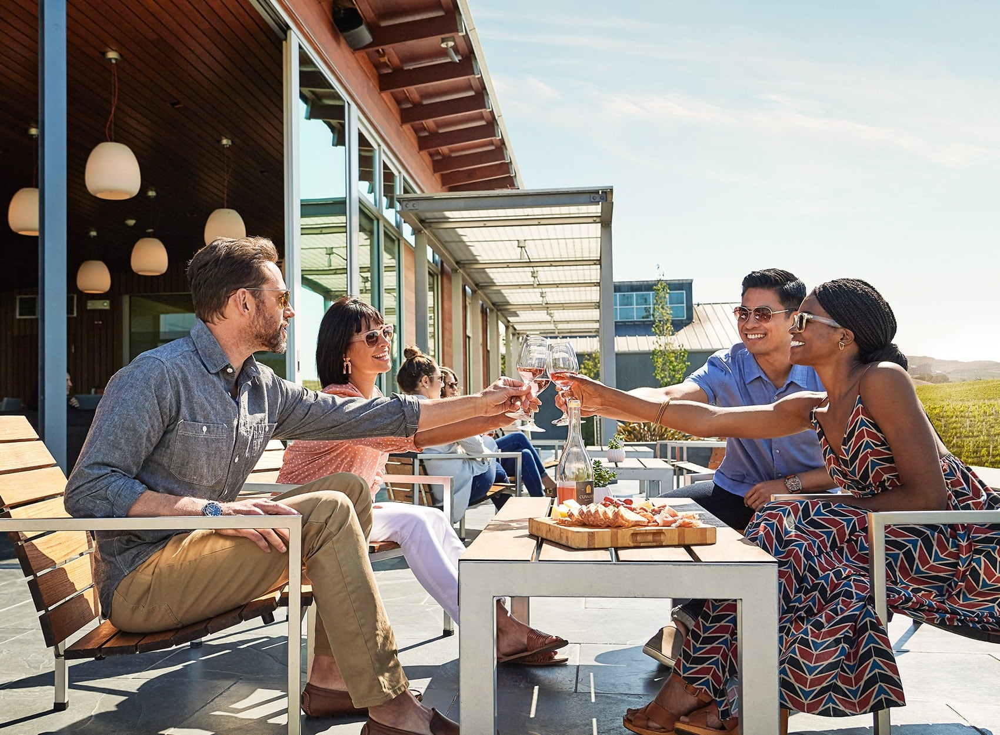

¿Quíenes somos?
Fundada en 1969
Fiel a nuestra Raíces del Valle de Napa
Cuvaison es una de las bodegas pioneras que ayudaron a dar forma a la era moderna de la vinicultura del Valle de Napa. Como bodega familiar independiente durante casi cinco décadas, nos dedicamos a elaborar vinos excepcionales de nuestra aclamada finca en la región de Los Carneros del valle de Napa. Hasta el día de hoy, nuestra misión permanece fiel a nuestras raíces, y también lo hacen nuestros vinos.
